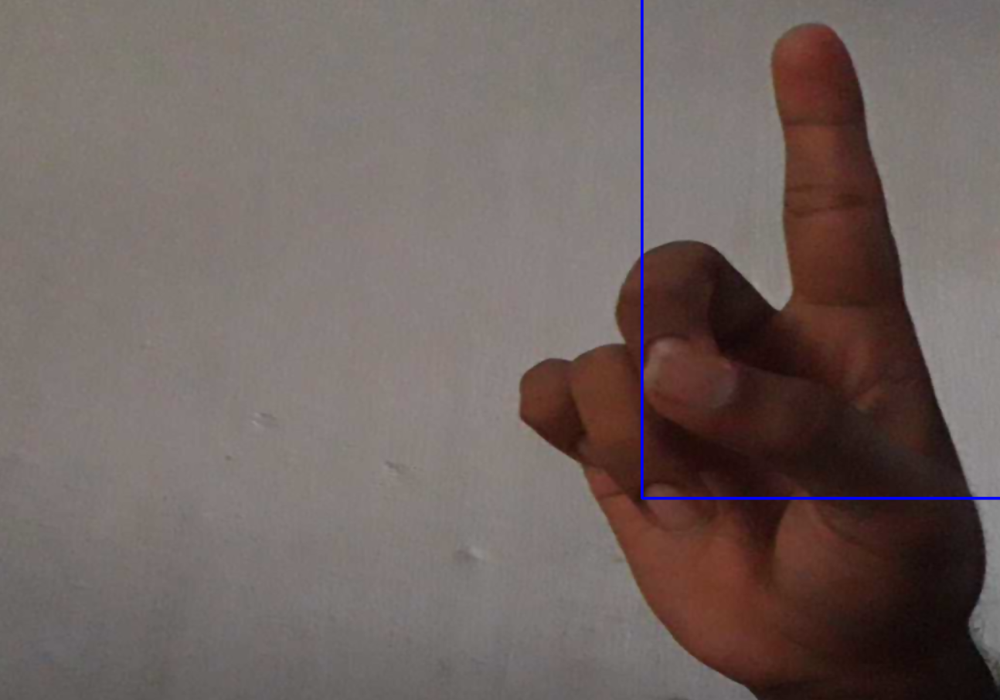
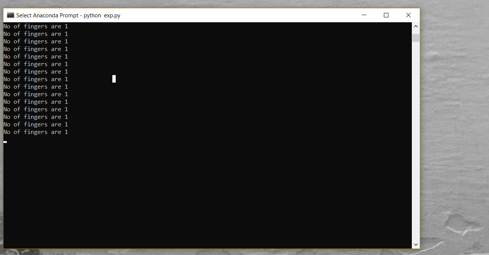

Finger recognition and detection is a project that is done to give a demo in workshop that was conducted on AI in Tirupathi. It was a
one day hands-on workshop on Image Processing, Computer Vision and Machine Learning. This workshop is created a record in India book of
records in terms of highest number of people gathered for a AI workshop
This sole purpose of creating the project is to gain knowledge and share it to the attendees by giving a demo. It doesn't have much of
practical usage but helpful in learning various concepts.
In addition to the demo that was presented, we also served as supporting trainers for the humongous croud gathered at the workshop
The working of the project is demonstrated below
Stream a live recording from webcam or by using IP camera. We used IP camera instead of webcam for no good reasonl.

we draw a rectangle boundry so that fingers placed in that region are captured by pressing a key in the keyboard.
for captured background image a convex hell is drawn and convexity defects calculation is performed to count the number of fingers detected.
Number of Fingers detected is displayed and based on number of fingers detected we perform different operations on image streaming through IP camera

if number of fingers detected is one streaming video is converted into black and white and no of fingers is four it makes streaming image blurred.